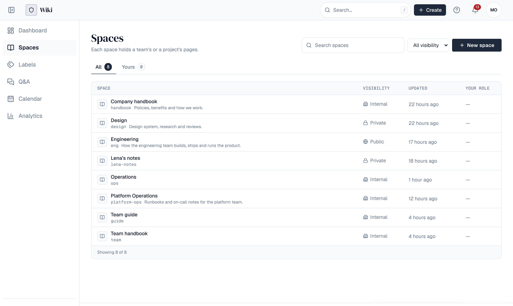

The Wiki isn't released yet. Early adopters: contact us for access to get the server and a license.
The Wiki is a self-hosted team wiki. People write pages together in spaces, see each other's edits live, ask and answer questions, plan with space calendars and see what is read. It runs on a single server or as a cluster, with the same features either way, on the same platform as Depotex: the same sign-in, settings, backups, plugins and audit log.

1. What it does
| Capability | What the Wiki does |
|---|---|
| Spaces for every team | Spaces hold pages and decide who reads and writes them: private, internal or public, with roles for people and groups. |
| Pages written together | A Word-like editor with headings, tables, images, videos and macros; live editing with everyone's cursors; autosave, drafts, reviews and publishing, versions you can compare and restore, and comments. |
| Whiteboards | Live whiteboards to sketch, plan and run retrospectives together, with timers, dot voting and notes hidden until revealed (Enterprise). |
| Questions and answers | Company-wide Q&A: ask, answer, vote and accept, with mentions and links to pages. |
| Kee, AI in the Wiki | Writing help and writing helpers in the editor, title, label and duplicate page suggestions, page summaries, Ask Kee with changes you apply, agents you build and share, a weekly space digest, and your own AI apps connected to the Wiki, on your organisation's own model provider account, with switches, limits and a switch per space (Pro). See Kee. |
| Calendars | Space calendars with events, leave, publishing plans and review dates, and a feed for your own calendar app. |
| Analytics | Page, space and personal analytics and content health: stale pages, broken links, searches that find nothing. |
| Moves in and out | Import Markdown files or a whole space from Confluence; export pages as Word or PDF. |
| Runs where you do | PostgreSQL holds everything; Redis is optional on one server and required for a cluster; attachments go to a local disk, S3, MinIO or Azure Blob. See the admin guide. |
2. Where to start
- Getting started: sign in, open a space and write your first page.
- Admin guide: install, set up, configure and run the Wiki.
- Changelog: what's new.